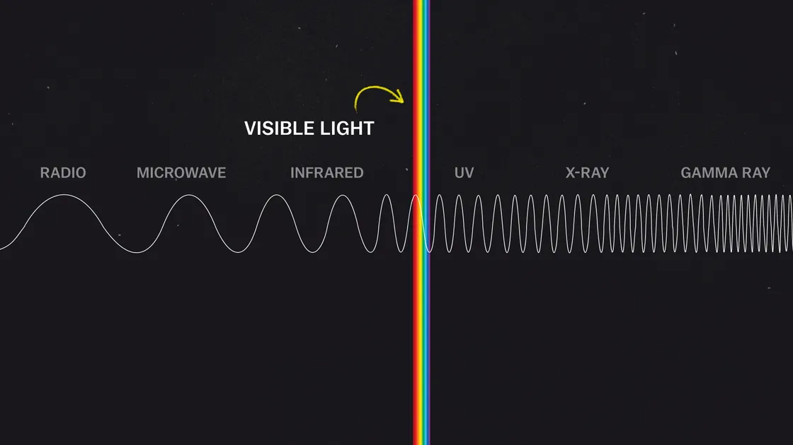

Questions. n. Answers
| Questions | Answers |
|---|---|
| What is an EXO Planet? | All of the planets in our solar system orbit around the Sun. Planets that orbit around other
stars are
called exoplanets. Exoplanets are very hard to see directly with telescopes. They are hidden by
the
bright glare of the stars they orbit.
Most of the exoplanets discovered so far are in a relatively small region of our galaxy, the
Milky Way.
We know from NASA's Kepler Space Telescope that there are more planets than stars in the galaxy.
The first exoplanets were discovered in the 1990s and since then we've identified thousands using a variety of detection methods. |
| How Many Galaxies Are There in the Universe? | Astronomers can use the Hubble Space Telescope to view galaxies near the edge of the observable universe (the region of space from which light has had a chance to reach us within the last 13.77 billion years). By examining a very tiny portion of the sky, counting up the number of visible galaxies in the universe in that specific region, and then multiplying that number to account for all the regions of the sky, astronomers estimate the number of galaxies in the universe. The best estimate from a 1999 study set that number at about 125 billion galaxies, and a 2013 study indicated that there are 225 billion galaxies in the observable universe. |
| Is it true that Andromeda Galaxy is moving toward us? | The Andromeda Galaxy (M31) is indeed approaching us, by about 300 kilometers (190 miles) per second measured with respect to the Sun. If you subtract the Sun's orbital motion around our galaxy (about 230 km per second toward Cygnus), M31 is still approaching the Milky Way by about 130 km per second. The two galaxies will merge a few billion years from now. |
| What is a black hole? | A black hole is a region of space where the force of gravity is so strong that the escape velocity exceeds the speed of light. Nothing, not even light, can escape its pull. Every object with mass creates its own gravitational field that exerts an attractive force on surrounding objects. At every point in space, there is an associated escape velocity, which is the speed necessary to escape that object's gravitational field and never come back. The escape velocity at a particular point depends both on the mass of the attracting object and the distance to its center. |
| What's Inside a Black Hole? | Inside the event horizon is where physics goes crazy. Calculations suggest that what the fabric of spacetime looks like inside a black hole depends on that particular black hole's history. It might be turbulent, twisted, or any other number of things. One thing's for sure, though: the tidal forces would kill you (see below). According to theory, within a black hole there's something called a singularity. A singularity is what all the matter in a black hole gets crushed into. Some people talk about it as a point of infinite density at the center of the black hole, but that's probably wrong — true, it's what classical physics tells us is there, but the singularity is also where classical physics breaks down, so we shouldn't trust what it says here. |
| What Is a Quasar? | Quasar is short for quasi-stellar radio source, because astronomers first discovered quasars in 1963 as objects that looked like stars but emitted radio waves. Now, the term is a catch-all for all feeding, and therefore luminous supermassive black holes, also often called active galactic nuclei. It's a bit of a contradiction to call a black hole luminous; black holes themselves are, of course, black. In fact, almost every large galaxy hosts a black hole with the mass of millions to billions of Suns, and many of these black holes lurk in the dark. Our Milky Way's behemoth weighs in at 4.3 million solar masses, but its starvation diet mutes all but faint flashes and flickers. |
| How do black holes form? | There are a couple of answers to the question, "How do black holes form?" Different types of black holes form through different processes. Stellar-mass black holes are born when very massive stars (typically tens of solar masses) explode in supernovae. These explosions are some of the most energetic phenomena in the universe. In a supernova, the outer layers of a dying star are violently ejected into space, while the remaining core collapses under its own weight to form a black hole. |
| Why Do Stars Twinkle? | Though it wouldn't work so well in the nursery rhyme, a there is actually a technical term for when stars twinkle: astronomical scintillation, an effect due to our planet's atmosphere. As light travels through the blanket of air around our planet, it is diffracted (bounced around) causing a quick apparent dimming and brightening — a star's signature "twinkle". While some stars do physically change in brightness over time, they typically do so on long timescales — amateur astronomers monitor these changes sometimes over hours, but more often over days, weeks, or years. These variable stars are well studied and often signal complex physical changes happening to the stars in question. |
| Why is the sky blue? | The blue color of the sky during the day is caused by scattered sunlight. The white light from the Sun is composed of all the colors of the rainbow. During the day, the molecules in the air scatter the blue light from the Sun more that the red light making the sky appear blue. In the evening, however, we see the red and orange colors because the blue light has been scattered away from our line of sight. |
| What is the speed of light? | Light travels at a constant speed of 186,262 miles per second (299,792,458 meters per second). Since the speed of light is constant, it can also be used to measure vast distances. Distances between objects in space are measured in light years. One light year is equal to the distance light travels in a year, which is just under 6 trillion miles (10 trillion kilometers). The speed of light is considered to be the ultimate speed limit in the universe. Scientists believe that it is impossible to travel faster than light because any object traveling at the speed of light would have to achieve infinite mass. |
| What Colors Are in Space? | Space has a great spectrum of colors regarding celestial bodies, and celestial bodies are
typically assorted into a spectral class according to their hue. Celestial bodies go through
phases of spectral evolution where they behave similarly to iron heated in a fire. Throughout
their evolutionary phases, they will shift from red to orange, yellow, white, or blue as they
reach their hottest phases. Depending on trace amounts of elements — aside from hydrogen and
helium — stars may appear in cooler secondary colors like purple and green.
Stars can exhibit the following colors, in order from hottest to coldest:
|
| How scientists colorize photos of space? | The Hubble Space Telescope only takes photos in black and white. To make those beautiful space
photos you've probably seen, scientists add the color later, using a technique developed around
the turn of the 20th century that imitates how our eyes naturally perceive color.  Only a fraction of the range of frequencies of light and their wavelengths, called the electromagnetic spectrum, is visible to humans. The photoreceptors in our eyes, called “cone cells,” perceive wavelengths of light that appear roughly red, green, and blue. All other colors are combinations of these three, and they're known as the primary colors of light. When Hubble scientists take photos of space, they use filters to record specific wavelengths of light. Later, they add red, green, or blue to color the exposures taken through those filters. The result is full-color images that have a variety of purposes for scientific analysis. |